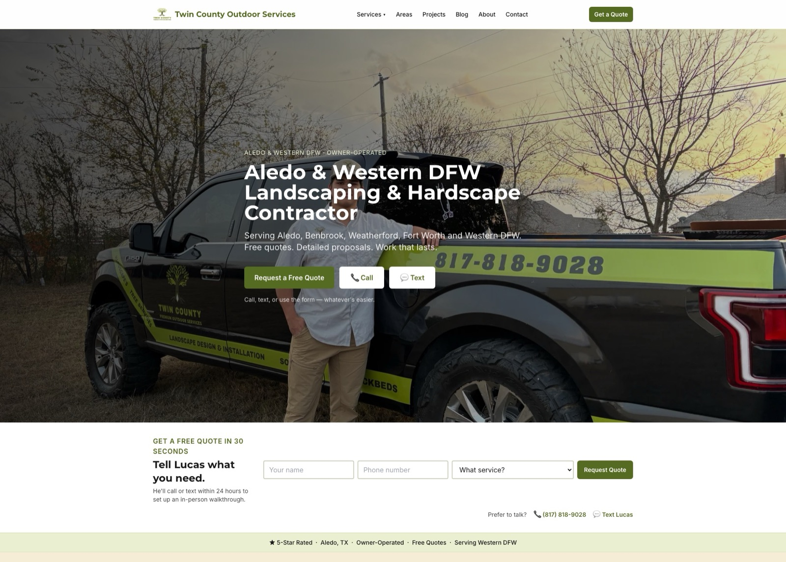
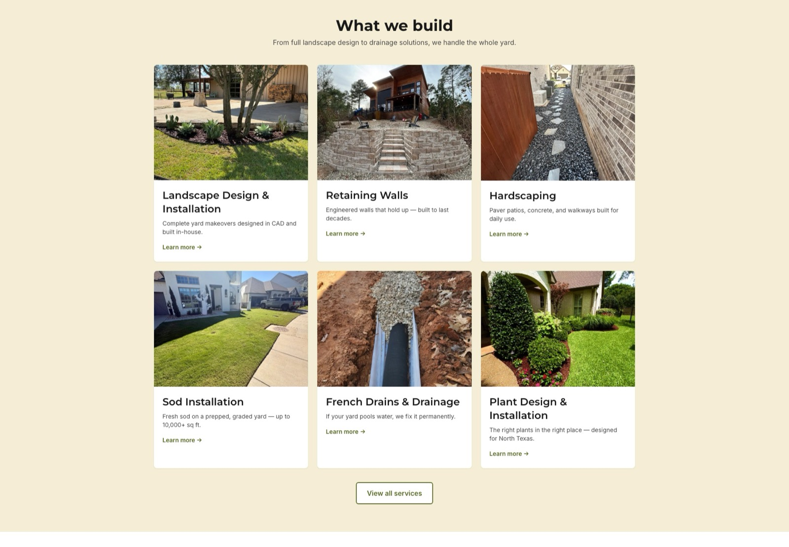
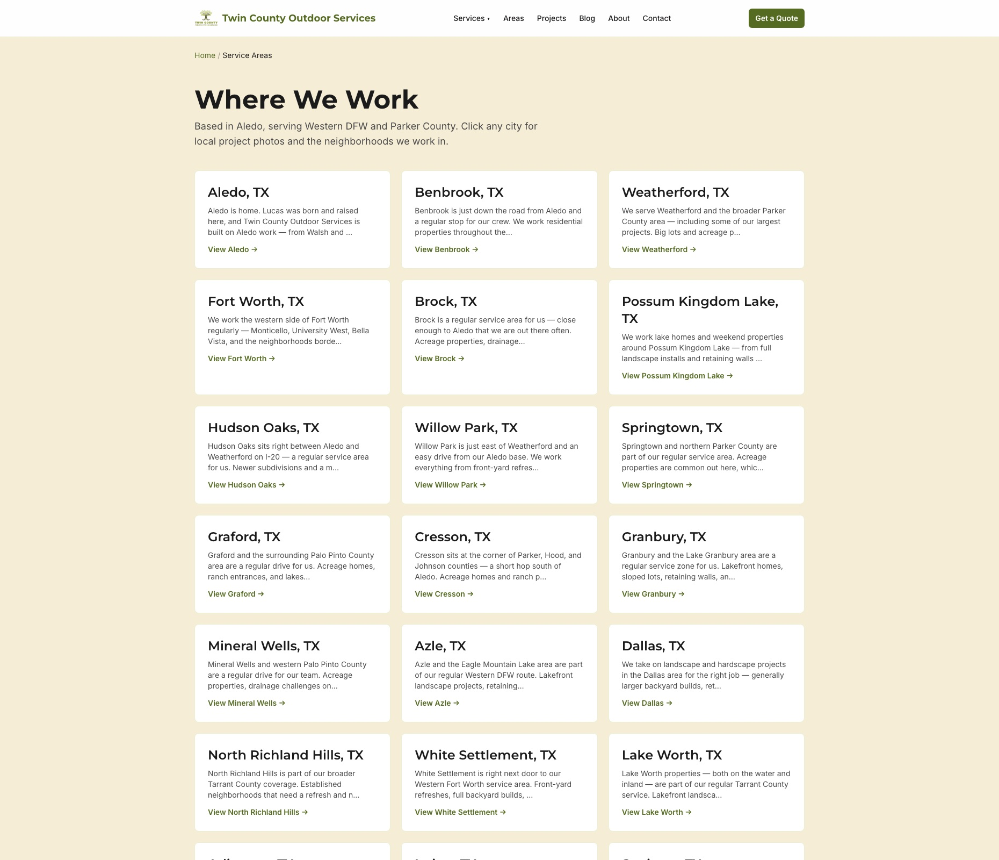

Twin County Outdoor Services
A single-crew landscaping & hardscape contractor in Aledo, TX, going up against better-funded outdoor living companies across Fort Worth and Parker County — built as a programmatic local SEO engine, not a static brochure site.

One crew. One truck. A market full of bigger names.
Twin County Outdoor Services is a single-crew, owner-operated landscaping and hardscape contractor working out of Aledo, TX. The competition isn't other one-truck operations — it's larger, better-funded outdoor living companies with marketing budgets Twin County doesn't have.
The site they started with reflected that gap: a handful of service pages and a 3-project portfolio. No city-level pages, no structured data, nothing built to catch the specific searches homeowners actually run — "French drains in Saginaw" or "retaining wall Keller TX." Search traffic went to whoever showed up for those queries, and it wasn't Twin County.
The goal: build a site that could compete on content depth and local specificity — the one advantage a small crew can win on a page-by-page basis, without hiring a marketing team to do it.
Services, cities, and projects as data — not hand-built pages.
We built a statically-generated Astro site where services, service areas, and projects live in structured TypeScript files, not hardcoded HTML. Dynamic route templates ([slug].astro) turn each data entry into a fully-rendered, SEO-complete page. New content is a data entry, not a build task.
- Astro — static output, zero client-side JS where none is needed, fast by default.
- TypeScript content model — services, service areas, and projects defined once, rendered everywhere they need to appear.
- Tailwind CSS — utility-first styling on top of the BurnsBuilt build pattern.
- Sharp + heic-convert — custom image pipeline converting HEIC phone photos into optimized WebP at card and gallery sizes.
- Schema.org structured data — LocalBusiness/HomeAndConstructionBusiness, Service, FAQPage, BreadcrumbList, and Article schema across the site.
- IndexNow — pings search engines the moment a new page publishes, instead of waiting on a crawl.
- Netlify — push to main, live in minutes.
A local SEO engine, not a single static site.
22 city pages that aren't boilerplate.
Pages like "French Drains in Saginaw, TX" and "Retaining Walls in Keller, TX" each carry unique local copy, city-specific FAQs, pricing context, and permit information — not a city name swapped into a template.
A homeowner in Saginaw sees a page written for Saginaw, not a find-and-replace.Every new page gets found automatically.
A central registry (geoPages.ts) cross-links each city page to its service hub, sibling cities, and relevant project photos the moment it's added. Solves the standard problem of pages that get built but never get linked to — and never get crawled.
No orphan pages. No manual link-building pass after every launch.15 pages of real work, from real photos.
Replaced a 3-project starting point with 15 project pages built from real client photos, with before/after sliders. HEIC photos off a phone go through the Sharp/heic-convert pipeline and come out as optimized WebP at card and gallery sizes.
Real jobs, real photos, no stock imagery.One verified business entity, tied to every page.
A single canonical LocalBusiness/HomeAndConstructionBusiness entity (@id-based) anchors Service, FAQPage, BreadcrumbList, and Article schema across the site — so Google can confidently tie every page back to one business instead of guessing.
Rich-result eligibility across the full site, not a handful of pages.Built on data. Prioritized by evidence, not guesswork.
The site wasn't built once and left alone. It launched with core services and service areas, then grew in two more passes — 10 additional geo pages, then a further round closing gaps that a competitor analysis surfaced. It's a continuously evolving asset, not a one-and-done launch.
Prioritization came from real Google Search Console data — pages were rewritten and new pages were built based on actual impression, click, and position numbers, not assumptions about what might rank.
A competitor analysis against 4-5 direct local competitors informed which pages to build next, surfacing specific content gaps — services or cities competitors covered that Twin County didn't — and closing them.
From a handful of pages to a 92-page local SEO footprint.
The geo pages did exactly what they were built to do.
Search Console has tracked this property for 13 straight weeks now. Here's the actual weekly curve — not a projection.
Weekly impressions, Google Search Console · Web search · Apr 2026 – Jul 2026
Most of that volume didn't exist eight weeks ago — it showed up once the 22 geo pages had time to get crawled, indexed, and ranked. No new ad spend. Just pages that keep ranking for what homeowners actually type into Google.
Screenshots.
The project in the wild — UI from the live product.


We build local SEO engines for home service contractors.
Geo-targeted landing pages, auto internal linking, and full schema markup for landscaping, hardscape, and outdoor service businesses competing against bigger-budget competitors.
Competing against bigger budgets on search?
If you're a one-crew or one-truck operation losing local search traffic to companies with real marketing spend, tell us your service area and we'll scope what it would take to close the gap.
Let's Talk